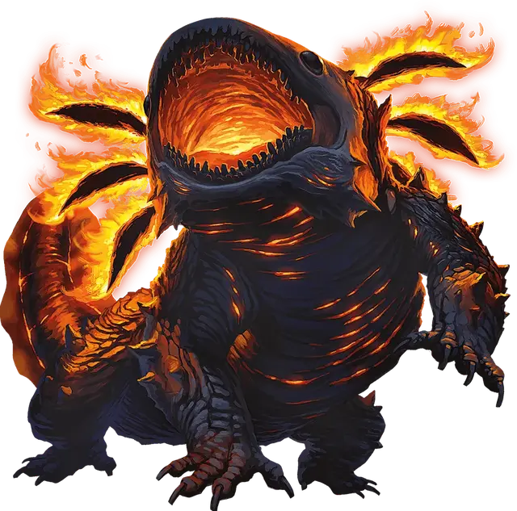

Тлексолотль
Tlexolotl
Огромный Элементаль, обычно нейтральный

Класс Доспеха 15 (природный доспех)
Хиты 104 (11к12 + 33)
Скорость 40 футов
| мод | спас | ||
|---|---|---|---|
| СИЛ | 25 | +7 | +7 |
| ЛОВ | 10 | +0 | +0 |
| ТЕЛ | 17 | +3 | +3 |
| мод | спас | ||
|---|---|---|---|
| ИНТ | 7 | −2 | −2 |
| МДР | 13 | +1 | +1 |
| ХАР | 9 | −1 | −1 |
Иммунитет к урону огонь, яд
Иммунитет к состояниям окаменение, отравление, паралич
Чувства тёмное зрение 120 футов, пассивное Восприятие 11, чувство вибрации 120 футов
Языки Игнан
Опасность 10 (5900 опыта)
Бонус мастерства +4
Особенности
Огненная аура. В начале каждого хода тлексолотля каждое существо в радиусе 10 футов от него получает 7 (2к6) урона огнём, а легковоспламеняющиеся предметы в этой ауре, которые не носят или не несут, воспламеняются. Существо, которое касается тлексолотля или попадает по нему рукопашной атакой, находясь в пределах 5 футов от него, получает 7 (2к6) урона огнём.
Освещение. Тлексолотль излучает яркий свет в пределах 30 футов и тусклый свет еще в 30 футах.
Регенерация. Тлексолотль восстанавливает 10 хитов в начале своего хода. Если он получает урон холодом или погружается в воду, эта особенность не действует в начале следующего хода тлексолотля. Тлексолотль умирает только если начинает свой ход с 0 хитов и не может регенерировать.
Действия
Мультиатака. Тлексолотль совершает одну атаку Укусом и одну атаку Хвостом.
Укус. . Рукопашная атака оружием: +11 к попаданию, досягаемость 10 футов, одна цель. Попадание: 12 (1к10 + 7) колющего урона плюс 18 (4к8) урона огнём.
Хвост. Рукопашная атака оружием: +11 к попаданию, досягаемость 10 футов, одна цель. Попадание: 11 (1к8 + 7) дробящего урона плюс 14 (4к6) урона огнём. Если целью является Большое существо или меньше, оно должно преуспеть в спасброске Силы Сл 19, иначе будет отброшено на расстояние до 10 футов от тлексолотля и сбито с ног.
Пироклазма (перезарядка 5-6). Потоки расплавленной лавы извергаются из тела тлексолотля. Каждое существо в сфере радиусом 30 футов, с центром на тлексолотле, должно совершить спасбросок Ловкости Сл 15. При провале существо получает 21 (6к6) урона огнём и 21 (6к6) дробящего урона. При успехе существо получает половину этого урона.
Описание
Тлексолотли - гигантские существа, похожие на саламандр, которые дремлют глубоко в магме спящих вулканов. Тлексолотль веками дремлет в расплавленных глубинах, лишь изредка поднимаясь, чтобы пожрать огромное количество животных и растений, прежде чем вернуться в свой сон. Если сон тлексолотля нарушается — будь то вторжение незваных гостей в его вулканическое логово или извержение его расплавленного дома, — пропитанное лавой животное появляется в ярости, неистовствуя до тех пор, пока его брюхо не наполнится и вулкан снова не успокоится.
Несмотря на разрушительную силу тлексолотля, земля вокруг его вулкана часто богата природными ресурсами. Те, кто живет поблизости, обычно почитают тлексолотля как защитника земли, поскольку образуемый им пепел омолаживает почву и способствует процветанию жизни.